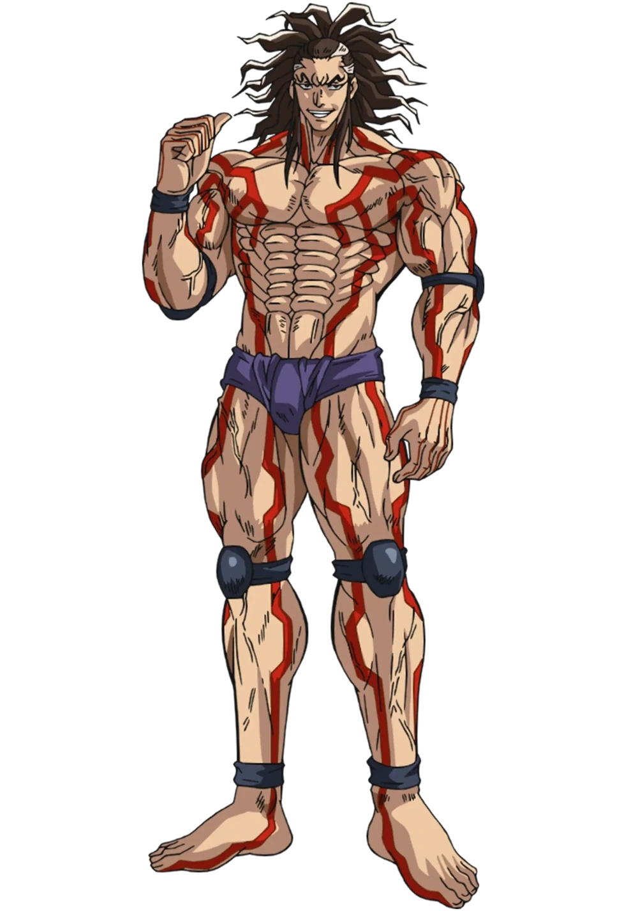

Présentation des participants !
Thor:Dieu marteau

Thor est un personnage important du manga et de l'anime Valkyrie Apocalypse. C'est le dieu du tonnerre, et c'est aussi le dieu le plus puissant du panthéon nordique, ainsi qu'un prince d'Asgard, fils d'Odin et cousin de Loki.
Zeus est l'un des principaux antagonistes du manga et de l'anime Valkyrie Apocalypse. C'est le dieu suprême du panthéon grec, et le président du Walhalla. Il est de plus, malgré son apparence de vieil homme, le plus jeune des quatre fils de Cronos, donc le petit frère de Hadès, Adamas et Poséidon, ainsi que l'un des Douze Dieux de l'Olympe. C'est l'un des treize champions des dieux pour le tournoi du Ragnarök. Il participe au deuxième combat de ce tournoi et, en tant que père des dieux, y affronte Adam, le père des humains.
Zeus:Dieu du tonerre

Kojiro

Kojiro Sasaki est un personnage majeur du manga et de l'anime Valkyrie Apocalypse. Il vécut de 1575 à 1612. Il était un grand maître de l'épée, maîtrisant le style Ganryu et combattant avec le Monohoshi-zao, un sabre extraordinairement long. Il est mort sur l'île de Ganryu-jima lors d'un duel contre Musashi Miyamoto, le plus grand épéiste de son temps. Kojiro est l'un des treize champions de l'humanité du tournoi du Ragnarök. Il affronta Poséidon lors du troisième combat de ce tournoi.
Il est né en 1860. À l'occasion du tournoi du Ragnarök, il se fait passer pour "Jack l'Éventreur", le célèbre responsable de la mort de cinq prostituées londoniennes vers la fin du 19e siècle. La raison est qu'il se sent proche de ce tueur de prostituées, car il a tué sa mère qui était une prostituée. En réalité, de son vivant, cet homme a tué le vrai Jack l'Éventreur et disposait principalement de deux autres identités. D'une part, sous le surnom de Jack Smith tiré du vrai nom de son père, cet homme était indirectement un agent de l'organisation Sentinelle, une agence de renseignements qui visait à faire régner l'ordre dans Londres par l'élimination des magnats les plus influents de la pègre britannique. Par conséquent, Jack reçut de nombreuses missions visant à assassiner de dangereux malfrats, et le vrai Jack l'Éventreur était l'une de ses cibles. Toutefois, Jack insistait sur le fait qu'il ne faisait partie d'aucune organisation à proprement parler, et ne faisant qu'aider Sentinelle avec pour intermédiaire l'agent Veuve Rouge. D'autre part, sous le surnom de "L'Artiste de la mort" tiré de sa capacité à voir les émotions d'autrui sous forme de couleurs, cet homme était un criminel de rang S, fortement recherché par les autorités londoniennes, y compris par Sentinelle. La récompense offerte pour sa capture était de douze mille livres sterling d'époque, ce qui équivaudrait aujourd'hui à environ 3.85 millions d'euros.
Jack Eventreur

Shiva:Dieu Hindou

Shiva est l'un des principaux antagonistes du manga et de l'anime Valkyrie Apocalypse. Il est le dieu de la destruction et de la reconstruction, ainsi que le dieu suprême de l'Hindouisme, depuis qu'il a vaincu 1115 dieux hindous se disputant cette place avec l'aide de son ami Rudra, puis vaincu ce dernier en duel.
Le bouddha, ou Bouddha, de son vrai nom Siddhartha Gautama, est un personnage majeur du manga et de l'anime Valkyrie Apocalypse. Autrefois un humain au VIe siècle avant J.C, il renonça à son titre royal et à toute richesse pour atteindre l'éveil et devint un dieu, fondateur et dieu suprême de sa propre religion, le Bouddhisme. Il est reconnu comme l'un des Quatre Sages avec Socrate, Jésus et Confucius.
Bouddha: Semi dieu

Qin shi huang

Qin Shi Huang, de son vrai nom Ying Zheng, est un personnage important du manga Valkyrie Apocalypse. Né en 259 et mort en 210 avant Jésus-Christ, il est le fondateur de la dynastie Qin et le premier empereur à avoir unifié la Chine. Il est également connu sous le nom de Shi Huang Di (始皇帝), qui signifie littéralement "premier empereur de Qin". Il est largement considéré comme le plus grand empereur chinois de tous les temps, bien qu'il soit parfois considéré comme un tyran
Belzébuth est un personnage important du manga Valkyrie Apocalypse. C'est un dieu scientifique qui pratique toutes sortes d'expérience dans son laboratoire, généralement sur des démons. Son but est qu'une de ses créations lui donne la mort un jour. Il est en effet atteint d'une grave psychose, la "pulsion de mort", qui se déclenche chaque fois que Belzébuth ressent de l'amour, et pousse donc le malheureux dieu à systématiquement tuer ceux qu'il aime. C'est pourquoi il cherche à mourir de la façon la plus cruelle qui soit, pour venger ses amis qu'il a tués.
Belzébuth:Dieu Scientifique

Apollon:Dieu De la philosophie

Apollon est un personnage important du manga Valkyrie Apocalypse. Il est l'un des Douze Dieux de l'Olympe, et l'un des fils de Zeus. Il est, entre autres, le dieu de la philosophie, de la poésie, de la médecine, de l'archerie, des prophéties, de la boxe, et par-dessus tout, le dieu du soleil.
Lü Bu Fengxian est un personnage important du manga et de l'anime Valkyrie Apocalypse. Il est de plus le protagoniste du spin-off Valkyrie Apocalypse - La Légende de Lü Bu. Né entre 153 et 156 et mort entre 198 et 199, c'était un général de guerre lors de l'ère des Trois Royaumes de Chine, le maître du cheval légendaire Lièvre Rouge, ainsi que le plus puissant guerrier de l'histoire de la Chine.
Lu Bu

Adam : 1 ère humain sur terre

Adam est un personnage majeur du manga et de l'anime Valkyrie Apocalypse. C'est le premier humain de l'histoire, né sept millions d'années auparavant. Il est considéré comme l'homme le plus détesté par les dieux, depuis qu'il a quitté le paradis de ses créateurs pour descendre sur Terre avec Ève fonder "leur propre paradis".
Poséidon est un personnage important du manga et de l'anime Valkyrie Apocalypse. C'est le troisième des quatre fils de Cronos ; plus précisément, il est le petit frère de Hadès et d'Adamas, et le grand frère de Zeus. Il est l'un des Douze Dieux de l'Olympe, ainsi que le dieu de la mer, portant les titres de "Zeus Enalios" (signifiant "Zeus des océans" en grec ancien) ou de "Dieu des dieux", de par la perfection qu'il dit avoir atteinte.
Poséidon:Dieu des oceans

Héraclès:Demi dieu

Héraclès, de son vrai nom Alcide[1], est un personnage important du manga Valkyrie Apocalypse. C'est un ancien humain qui a bu l'Ambroisie, le sang de Zeus, et qui est donc devenu un demi-dieu. Il fut adopté par le panthéon grec par Zeus en personne, suite à un long affrontement contre Arès, et il est aujourd'hui le partenaire d'armes de ce dernier, ainsi que le dieu grec de la justice.
Tameemon Raiden, de son vrai nom Tarokichi Seki, est un personnage majeur du manga et de l'anime Valkyrie Apocalypse. Né en 1767 au Japon et mort en 1825, il est le meilleur lutteur de sumo de l'histoire. Son palmarès est de 254 victoires, 10 défaites, 14 égalités, 2 forfaits nuls et 5 matchs nuls, sur un total de 285 matchs, avec un ratio de victoire de 96,2%, ce qui lui valut le surnom de "rikishi sans égal".
Tameemon Raiden
Zerofuku: Dieu de l'empathie

Zerofuku est un personnage important du manga Valkyrie Apocalypse. Il est le dieu à l'origine des Sept Dieux du Bonheur de la religion shintoïste, qui sont nés lorsque son âme s'est divisée en sept parties devenues chacune un nouveau dieu. Ironiquement, son nom signifie "pas de bonheur".
Hadès est un personnage important du manga Valkyrie Apocalypse. Il est l'un des Douze Dieux de l'Olympe, et le premier des quatre fils de Cronos, donc le grand-frère de Zeus, Poséidon et Adamas. Il est le dieu des Enfers dans la mythologie grecque, et le roi de Helheim, monde des démons.
Hades:Dieu de la mort

Nikola Tesla

Nikola Tesla est un personnage important du manga Valkyrie Apocalypse. Né en 1856 et mort en 1943, Nikola Tesla est un inventeur et ingénieur originaire de l'Empire d'AutricheW, et ayant vécu et travaillé aux États-UnisW. Il est considéré comme l'un des plus grands inventeurs de l'histoire de la technologie, avec 125 inventions dont un grand nombre portant sur l'énergie électrique. Il est parfois vu comme un savant fou
Léonidas est un personnage majeur du manga Valkyrie Apocalypse. Né vers 540 et mort en 480 avant Jésus-Christ, Léonidas Ier de Sparte était le roi agiade de SparteW de 489 à 480. Il est célèbre pour la bataille des ThermopylesW contre les PersesW, au cours de laquelle il affronta 300,000 soldats perses avec l'aide de seulement 300 soldats. Il mourut au cours de la bataille, mais permit de rallier toute la Grèce à la cause de Sparte, et de repousser l'avancée des Perses. Léonidas est réputé pour posséder le dos le plus admirable de l'histoire : la seule vue de son dos redonne du courage et de la vitalité à tout soldat.
Léonidas